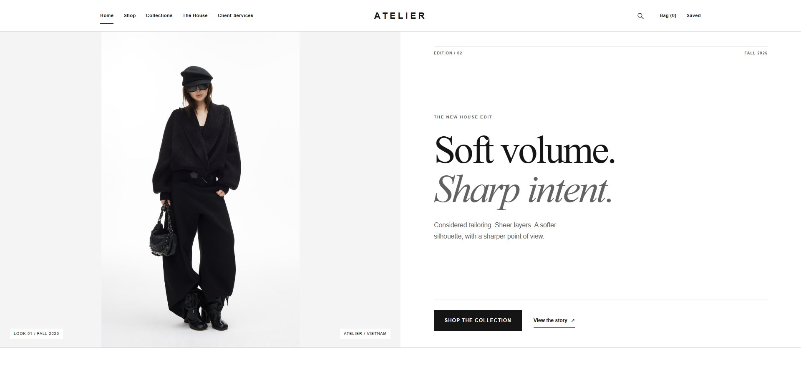
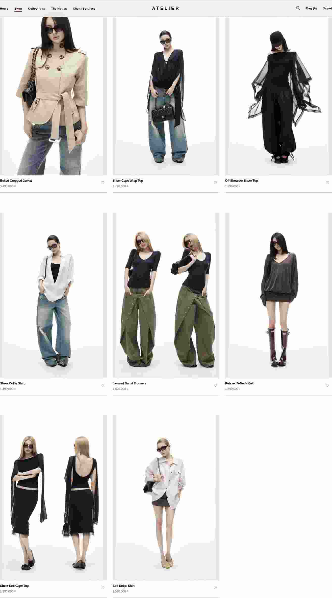
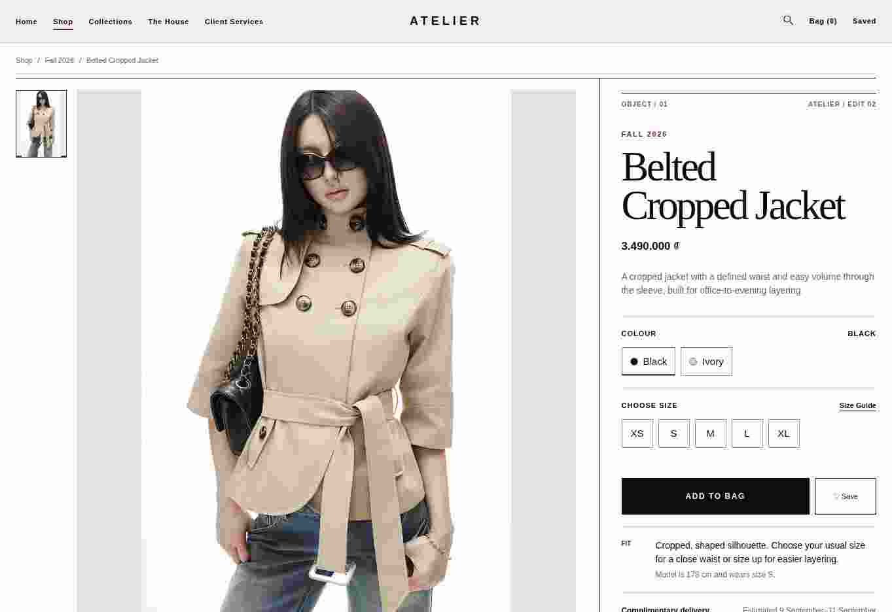

Indexed editorial system
Microtype, severe rules and image scale make ATELIER recognizable without decorative luxury clichés.
09 / Final UI
Committed rendered evidence





Microtype, severe rules and image scale make ATELIER recognizable without decorative luxury clichés.
Primary product media preserves full-garment and focal integrity.
Information becomes more explicit and denser as purchase commitment grows.
Reveal, gallery response, variant feedback and drawer continuity each have a defined job.